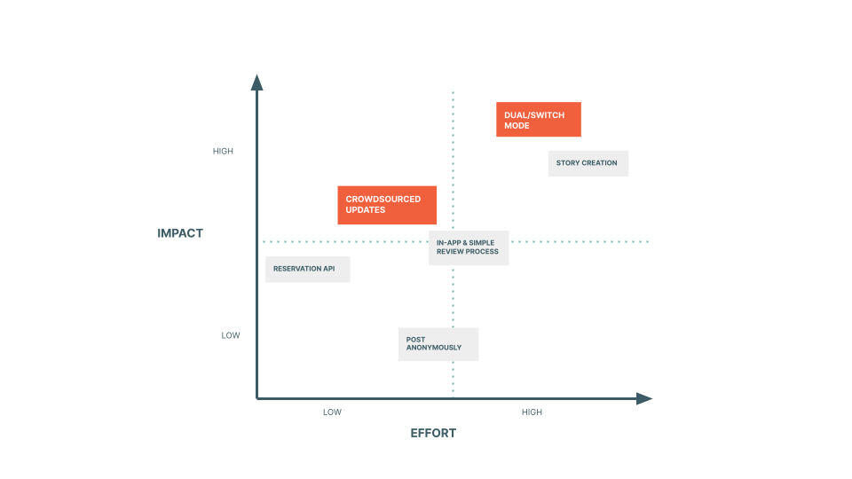

Ideation
We researched to gather insights from potential contributors to enhance the contributor features. We interviewed 6 participants who regularly use or express interest in local guide apps. Here are the findings and insights of the research:

Based on the insights, we suggested some features and prioritized two features by the Action Priority Matrix.
